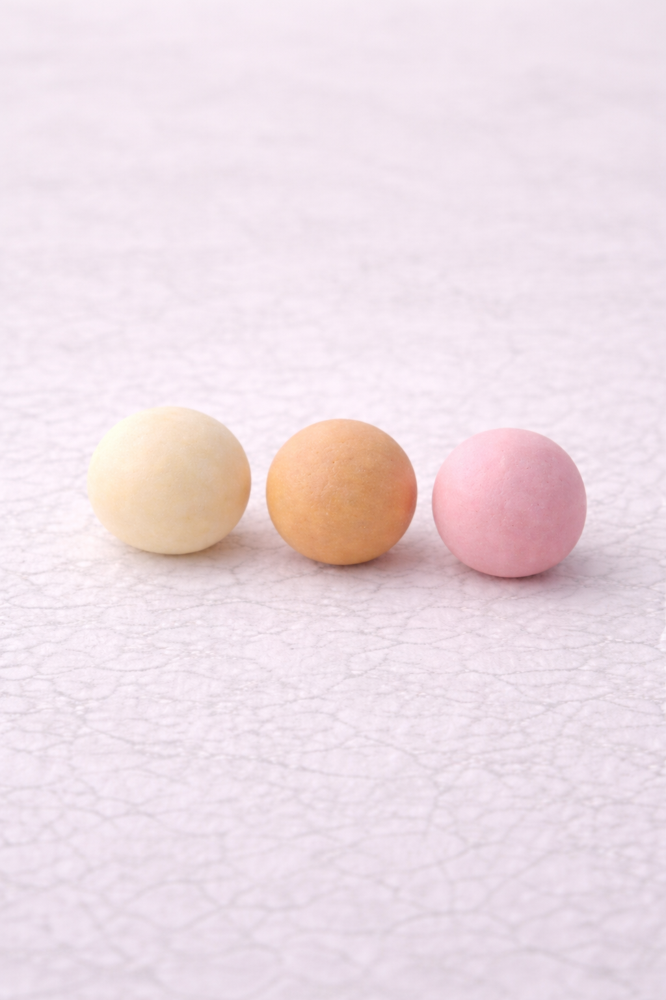
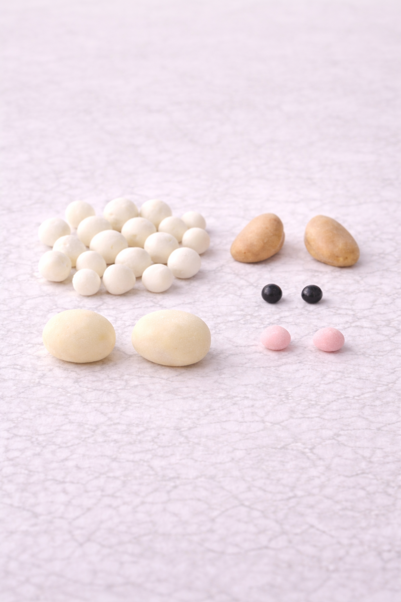
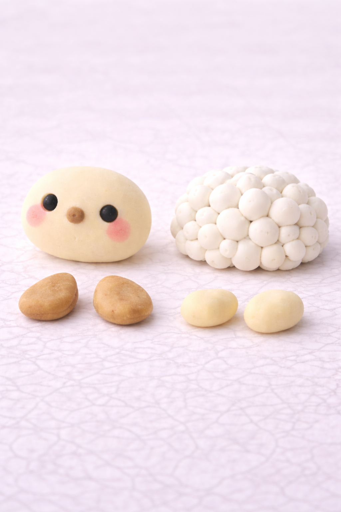

🐑 Clay Sheep Tutorial
Follow these steps to create a soft and fluffy clay sheep.
Step 1 – Create the base shapes

Start by preparing three main clay colors: a soft beige for the face and legs, a warm brown for the ears, and white for the wool.
Roll the clay into smooth shapes. Create one larger oval for the head, two small flat ovals for the feet, and two slightly longer shapes for the ears.
For the wool, roll multiple tiny white balls. These will later create the fluffy texture.
Step 2 – Build the face and body

Take the beige oval and gently shape it into the sheep’s face.
Add two small black balls for the eyes, a tiny nose in the center, and soft pink circles for the cheeks to give it a cute expression.
Start building the body by placing the small white balls together to form a round, fluffy base.
Step 3 – Assemble the sheep

Attach the head to the fluffy body and gently press it into place.
Add the ears on both sides of the head and place the feet at the bottom.
Continue adding small white balls around the body to complete the wool texture.
Step 4 – Final details and finishing

Carefully adjust all parts so the sheep looks balanced and symmetrical.
Smooth out any rough edges and make sure all pieces are firmly attached.
Take your time with the final touches — this is what makes your sheep look soft, polished, and professionally made.